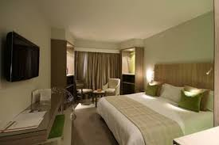

|
|
la badira
 Rue Assad Ibn Fourat BP 437, Hammamet 8050 Tunisie
Rue Assad Ibn Fourat BP 437, Hammamet 8050 Tunisie
537TND
Équipements de l'établissement
- Numéro 1 sur 115 hôtels à Hammamet
- Parking gratuit
- Internet haut débit gratuit (Wi-Fi)
- Piscine & Plage
- Centre de remise en forme/Salle de sport
- Petit-déjeuner inclus
- Équitation&Navette aéroport
Équipements de la chambre
- Chambres insonorisées
- Bureau&Cafetière/théière
- Baignoire/douche & Plage privée
pour resérver
|
|
Medina Solaria And Thalasso
Rue De La Médina - Yasmine Hammamet, 8056 Hammamet  255TND
255TND
Équipements de l'établissement
- 3 piscines
- Front de mer & Plage privée
- Restaurant&Bar
- Salle de sport
- Très bon petit-déjeuner
Équipements de la chambre
- Service d'étage
- Chambres non-fumeurs
- Équipements pour les personnes handicapées
pour resérver
|
| 
|
Golf Royal Hotel
51-53 Rue Radhia Haddad, Centre de Tunis, 1001 Tunis
200TND
Équipements de l'établissement
- Parking&Réception 24/24
- Connexion Wi-Fi gratuite
- Restauration & Bar
- Vue sur la ville
- Sécurité 24h/24 & Alarme de sécurité
Équipements de la chambre
- Chambres non-fumeurs
- Télévision à écran plat
- Climatisation & Chauffage
- Service d'étage
 Toute réservation de plus de 9 chambres peut entraîner des conditions particulières et des frais supplémentaires.
Toute réservation de plus de 9 chambres peut entraîner des conditions particulières et des frais supplémentaires.
pour resérver
|
|
|
Sheraton Tunis Hotel
Avenue De La Ligue Arabe , 1080 Tunis
300TND
Équipements de l'établissement
- Parking & Réception 24/24
- Connexion Wi-Fi gratuite
- Vue sur la ville
- Restauration & Bar
- Spa et centre de bien-être
- 2 piscines
- Sécurité 24h/24 & Alarme de sécurité
Équipements de la chambre
- Chambres non-fumeurs & Chambres familiales
- Télévision à écran plat & Radio
- Climatisation & Chauffage
- Petit-déjeuner en chambre
- Service d'étage
pour resérver
|
|
|
Acropole Tunis
Berges Du Lac, Les Berges du Lac, 2045 Tunis
230TND
Équipements de l'établissement
- Parking&Réception 24/24 & Bagagerie
- Connexion Wi-Fi gratuite
- Restauration & Bar
- Vue sur le lac
- Services de nettoyage
- Sécurité 24h/24 & Alarme de sécurité
Équipements de la chambre
- Chambres non-fumeurs
- Balcon & Terrasse & Jardin
- Petit-déjeuner en chambre
- Climatisation & Chauffage
- Plateau/bouilloire dans tous les hébergements
Les animaux de compagnie ne sont pas admis au sein de l'établissement.
pour resérver
retour au début
|